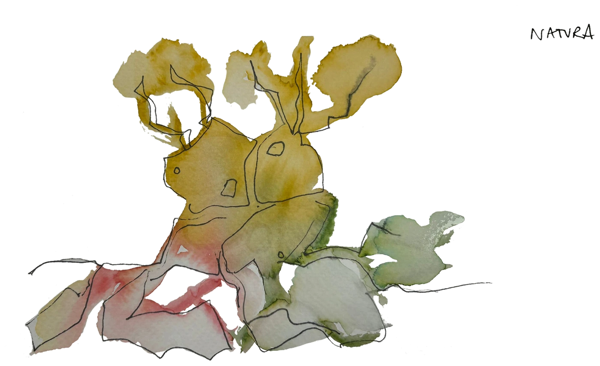

 002 — Natura Oba- 39.287366° N, -1.469556° O 01Agua de tomate 02Cerveza de trompeta 03Prestige de espirulina 04Amasake de maíz 05Pet-Nat de rosas 06Zurracapote de sauco 07Oba-Cola 08Guarapo de almendra